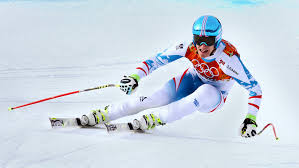
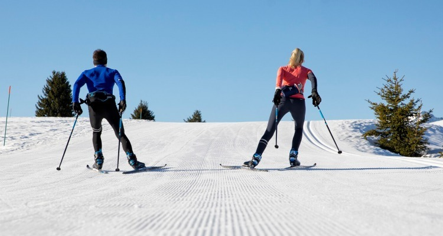
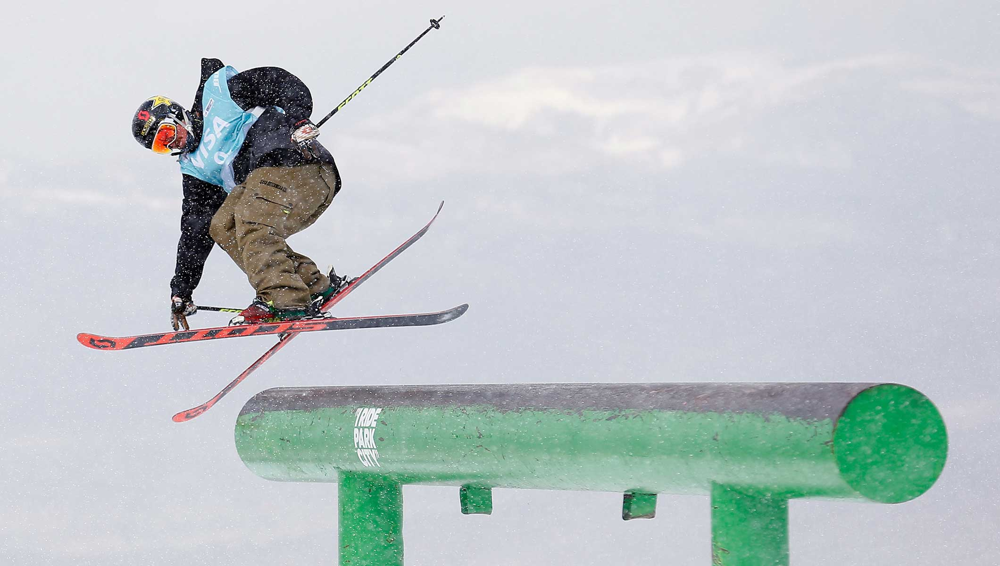

Although I'm sure you know what skiing is, there are many types of skiing available.
We'll be going over the 3 most common types and what they are.



Alpine Skiing
If you've ever gone skiing, this is likely the type of skiing that you've done.
Alpine skiing, or downhill skiing, is the pastime of sliding down snow-covered slopes on skis with fixed-heel bindings, unlike other types of skiing (cross-country, Telemark, or ski jumping), which use skis with free-heel bindings. Whether for recreation or for sport, it is typically practised at ski resorts, which provide such services as ski lifts, artificial snow making, snow grooming, restaurants, and ski patrol.
"Off-piste" skiers—those skiing outside ski area boundaries—may employ snowmobiles, helicopters or snowcats to deliver them to the top of a slope. Back-country skiers may use specialized equipment with a free-heel mode, including 'sticky' skins on the bottoms of the skis to stop them sliding backwards during an ascent, then locking the heel and removing the skins for their descent.
Alpine skiing has been an event at the Winter Olympic Games since 1936.
Cross-country skiing is a form of skiing where skiers rely on their
own locomotion to move across snow-covered terrain, rather than using
ski lifts or other forms of assistance. Cross-country skiing is widely
practiced as a sport and recreational activity; however, some still use it as a means of transportation.
Variants of cross-country skiing are adapted to a range of terrain which spans unimproved, sometimes mountainous terrain to groomed courses that are specifically designed for the sport.
Modern cross-country skiing is similar to the original form of skiing, from which all skiing disciplines evolved,
including alpine skiing, ski jumping and Telemark skiing. Skiers propel themselves either by striding forward (classic style) or
side-to-side in a skating motion (skate skiing), aided by arms pushing on ski poles against the snow.
It is practised in regions with snow-covered
landscapes, including Northern Europe, Canada, Russia, the United States, Australia, and New Zealand. Competitive cross-country skiing is one of the Nordic skiing sports.
Cross-country skiing and rifle marksmanship are the two components of biathlon, ski orienteering is a form of cross-country skiing, which includes map navigation along snow trails and tracks.
Freestyle skiing is a skiing discipline comprising aerials, moguls, cross, half-pipe, slopestyle and big air as part of the Winter Olympics.
It can consist of a skier performing aerial flips and spins, and can include skiers sliding rails and boxes on their skis. It is also commonly
referred to as freeskiing, jibbing, as well as many other names around the world.
Ski Ballet/Acroskiing: Ski ballet, later renamed acroski (or "acro"), was a competitive discipline in the formative years of freestyle skiing.
Competitors devised routines lasting 3 to 5 minutes and executed to music. The routines consisted of spins, jumps, and flips on a prepared flat course.
The routines were scored by judges who assessed the choreography, technical difficulty, and mastery of skills demonstrated by the competitors.
Half-Pipe Skiing: Half-pipe skiing is the sport of riding snow skis on a half-pipe.
Competitors perform a series of tricks while going down the pipe.
The current world record for highest jump in a half-pipe is held by Joffrey Pollet-Villard, with 26 feet 3 inches (8.00 metres).
David Wise of the United States of America became the first Olympic champion in this discipline with a total of 92.00 points.